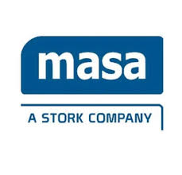
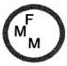
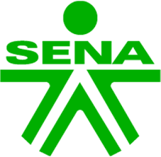
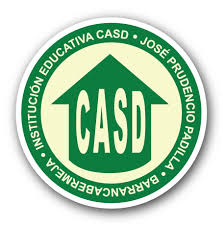

Presentación Profesional
Soy tecnólogo en Procesos de la Industria Química con más de diez años de experiencia en operación de plantas industriales, generación de vapor y sistemas de utilidades energéticas. Durante mi trayectoria he trabajado en operación de calderas acuotubulares y pirotubulares, turbogeneradores, compresores centrífugos y sistemas de tratamiento de agua por ósmosis inversa, así como en operaciones de transferencia de hidrocarburos y monitoreo de variables de proceso. Me especializo en mantener la continuidad operativa de los procesos, aplicando estrictamente los lineamientos de seguridad industrial (HSE) y buenas prácticas operativas en entornos de alta exigencia técnica. Actualmente me encuentro interesado en oportunidades como Operador de Planta, Operador de Utilidades Industriales o posiciones relacionadas con generación de energía y procesos industriales.
Experiencia Profesional
Ecopetrol S.A.
Aprendiz Técnico Productivo | 2024 – 2025- Apoyo en la operación de servicios industriales.
- Monitoreo de sistemas de ósmosis inversa.
- Operación de compresores Siemens e Ingersoll Rand.
- Control de variables críticas de proceso.

Masa Stork
Operador de Oleoducto | 2022 – 2023- Operación de sistemas de transporte por ductos.
- Limpieza de trampas de recibo.
- Monitoreo de presión y flujo.
Impala Terminals
Tankerman | 2014 – 2021- Transferencia de hidrocarburos entre barcazas.
- Control de interfaces de producto.
- Operación de sistemas de bombeo.
Termipetrol / ST&P Ingenieros
Operador de Turbina y Calderas | 2011 – 2014- Operación de calderas acuotubulares y pirotubulares.
- Operación de turbogeneradores.
- Monitoreo desde cuarto de control.

Fabio Moncada Montoya
Operador Mantenedor de Planta | 2010 – 2011- Rondas operativas.
- Mantenimiento preventivo en bombas.
- Monitoreo de vibración y presión.
Educación

Tecnología en Procesos de la Industria Química
SENA | 2026Tecnología en Supervisión de Redes Eléctricas
SENATécnico Profesional en Mantenimiento Electrónico
SENA